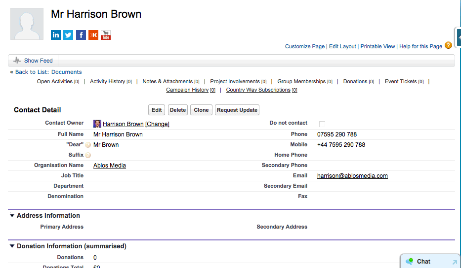

On this page:
By default your email signature will be generated with the information on your user profile so you must set up that information before sending emails with SalesForce. To update your information, click the down arrow next to your name at the top of any SalesForce page, then on My Settings, then on Personal Information, then fill out any fields you can on the Personal Information page.
To send an email to a contact, find that contact's record page, scroll down to Activity history and click Send an email.
From the Send an Email page click Select Template and choose the default organisation email signature. You can then edit the subject line, CC and BCC fields, and the email text itself.
After you click Send that email will be sent to that user and it will be logged in their Activity History.